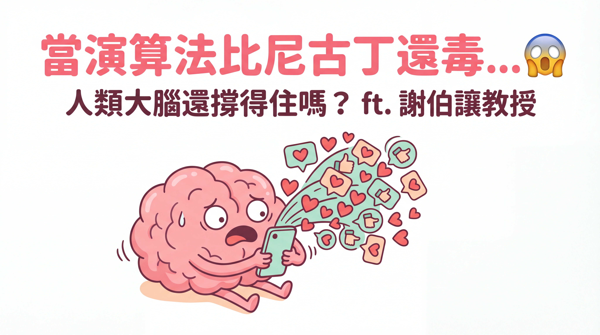
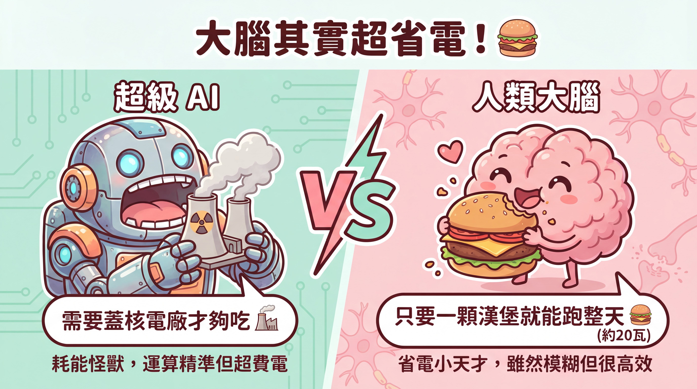
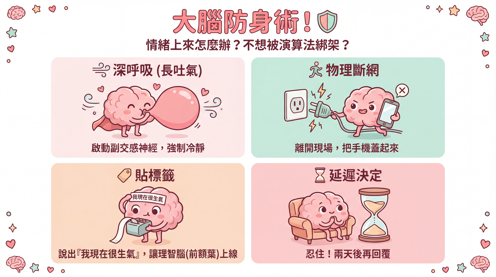
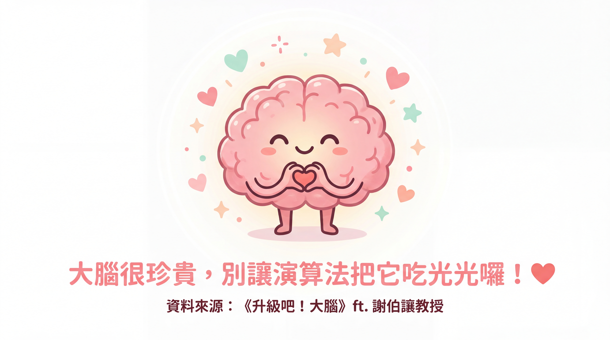

當演算法成癮比尼古丁強10倍！人類的大腦設計過時了嗎？

來源：思想實驗室 Podcast ep83
來賓：謝伯讓教授（臺大心理系）
參考書籍：《升級吧！大腦》
📊 本文導覽
- 內容型態：Podcast 訪談筆記
- 分析角度：📰 記者視角 | 👨🏫 講師視角 | 🎯 專家視角
- 適合讀者：關心數位健康的家長、教育工作者、對腦科學有興趣的讀者
1. 📰 記者視角：新聞價值與社會影響
核心議題
「如果今天有一種毒品，它的成癮性比尼古丁還要強十倍，而且是針對小孩而來的，全世界包括全臺灣的家長，大概都會很緊張吧。但詭異的是，當這種東西被包裝成演算法跟短影音的時候，然後又裝進我們手機之後，我們卻幫小孩子付這個電信費，讓他們整天掛在上面。」—— 主持人
- 開場震撼彈：演算法成癮性是尼古丁的十倍，而且目標鎖定的是兒童——這引發了全球公眾的高度擔憂。
- 全球首例：澳洲政府立法禁止 16 歲以下使用社群媒體，等於是開啟了一場「大腦公共衛生防衛戰」。
- 故事性：透過寶石甲蟲抱著啤酒瓶求偶的例子，生動說明大腦「求生而非求真」的演化機制，以及認知偏誤的危險。
- 社會影響：
- Z 世代青少年的心理問題（焦慮、自我傷害）指數型飆升，與社群媒體及 3C 產品的普及密切相關（參見《失控的焦慮世代》）。
- 澳洲禁令的宣示意義：由上而下的規範可以避免「我家小孩不能用，會被同儕排擠」的困境。
- 腦機介面的普及可能導致社會不公平，以及「超級人類」的倫理爭議。
- 熱門話題：「演算法成癮」、「大腦過時」、「腦腐（Brain Rot）」、「超級人類」、「永生 AI」——這些議題都具有高度新聞價值。
- 未來趨勢：AI 與人類大腦的關係、AI 對教育的衝擊、人類的終極選擇——肉體凡軀或永生 AI？
關鍵提問
- 為何大腦在 AI 時代下顯得「過時」？——其實是演化優勢被演算法利用了
- 社群媒體和 3C 產品如何影響青少年心理健康？——不是腦壞了，是胃口被養壞了
- 澳洲的禁令是否是解決方案？——宣示意義大於實際效果，但很重要
- 腦機介面和 AI 永生將如何重塑社會結構？——貧富差距可能進一步擴大
- 人類是否應該追求永生，還是珍惜有限的生命？——這是每個人都需要思考的問題
2. 👨🏫 講師視角：教學法與概念釐清
核心概念講解
「大腦在過去的環境中，他其實演化出來的就是，他只想要求生，他沒有要求真。」—— 謝伯讓教授
- 大腦的演化優勢:
- 省電與模糊運算：大腦只需約 20 瓦就能運作一整天（相當於一顆漢堡的能量），而 AI 卻需要蓋核電廠才夠用。這種「省電設計」源於演化過程中能量資源的有限性。
- 非「求真」而是「求生」：大腦內建自動化程序和捷徑，追求快速決策而非絕對正確，即使可能導致認知偏誤。

- 成癮機制:
「3C 提供你就是非常快速、非常即時的小獎勵。那當你習慣這種小獎勵之後，你就會去忽視，或是對這種長期的獎勵，現實中的長期獎勵，你會忽視。你會失去耐心，就無法追求這種現實中原本的獎勵。」—— 謝伯讓教授
- 即時獎勵：3C 產品和短影音提供快速、短暫的多巴胺獎勵，讓人習慣「先拿先贏」的模式，逐漸忽視長期獎勵。
- 習慣的轉變：青少年對短獎勵的偏好並非神經損壞，而是習慣養成，使其難以適應需要長時間專注的課堂或閱讀。
- AI與人類的差異:
「我們人腦的知識是物理綁定的，是生物綁定，就是跟你大腦綁在一起，你的大腦一死亡你的知識就消失了⋯⋯AI 呢，就是完全反過來。它的知識內容是跟它的硬體可以脫鉤的，整套軟體搬到另外一個伺服器上⋯⋯靈魂可以轉移。」—— 謝伯讓教授
- 不朽性：AI 知識與硬體脫鉤，硬碟壞了換一個就好；人腦知識與大腦綁定，隨個體死亡而消失。
- 傳輸效率：AI 訊息傳遞高速（網路）；人腦傳輸效率低（講話、比手畫腳）。
- 學習模式：AI 可以開分身同時學法律、醫學、工程；人腦無法複製，一次只能做一件事。
- 教育的未來方向:
「當我給你一個現象的時候，請你舉出如何解釋這個現象的可能五種方法⋯⋯那最好是越天馬行空越多越好。這個就是第一步。那可是我覺得很少，我在過去我沒有受過這樣的訓練。」—— 謝伯讓教授
- 結構化知識輸入：強調學習法則、原理和類比式學習，而非死記硬背——AI 會幫你背，你要學的是「判斷力」。
- 培養觀察力、思維力、判斷力：看到現象時，試著列出五種可能的解釋，再找出驗證真假的方法。
- 區分 AI 與人類的強項：人類擅長在模糊情況下做出有意義的判斷，並具備行動勇氣。
- 認知防身術:
「如果你情緒上來了，那你馬上可以做的就是透過緩慢的吐氣，啟動你的副交感神經，讓你自己緩和下來。」—— 謝伯讓教授
- 深呼吸（長吐氣）：啟動副交感神經，強制冷靜。
- 物理斷網：離開現場，把手機蓋起來。
- 貼標籤：說出「我現在很生氣」，讓理智腦（前額葉）上線。
- 延遲決定：忍住！兩天後再回覆。

本文知識結構
- 問題引入：演算法成癮的嚴重性——比尼古丁強 10 倍，而且鎖定兒童
- 大腦機制：為何我們會被演算法綁架？——省電設計 + 求生捷徑 = 認知偏誤
- 成癮本質：不是腦壞了，是胃口被養壞了——即時獎勵 vs 長期獎勵
- AI vs 人類：AI 會永生、會分身、會高速傳輸——但人類有判斷力和行動勇氣
- 教育轉型：不要跟 AI 比記憶，要比判斷力——學會問「為什麼」
- 倫理議題：腦機介面、超級人類、物種同質化風險
- 防禦策略：認知防身術四招——深呼吸、斷網、貼標籤、延遲決定
3. 🎯 領域專家視角：專業知識與最佳實踐
領域知識深度
「澳洲有一種叫寶石甲蟲⋯⋯那你就會發現一堆的雄甲蟲，就巴著這個啤酒瓶在求偶。他抓準了一個捷徑就是說，只要有東西長得像咖啡色，而且是個有反光、油亮的光芒的話，那他應該就是雌甲蟲。可是沒想到說，竟然有人類發明了這個比雌甲蟲還像雌甲蟲的啤酒瓶。在甲蟲這個案例裡面，其實這跟人類好像也差不多。」—— 謝伯讓教授
- 神經科學與演化心理學：
- 大腦 20 瓦的節能運作是演化優勢，是為了在資訊有限、雜訊多、需要快速決策的環境中生存。
- 「求生而非求真」是演化策略——等到確認真相才行動的祖先，早就被老虎吃掉了。
- 寶石甲蟲抱著啤酒瓶求偶的例子，是演化學中典型的「捷徑誤用」案例——手機對我們來說，就像啤酒瓶對甲蟲一樣。
- AI 與腦科學比較：
- Geoffrey Hinton（AI 教父）的觀點：AI 具有不朽性、高速傳輸、同步學習等特質，與人腦有本質區別。
- AI 的「靈魂轉移」能力（硬體壞了換一個就好）與人腦知識的物理綁定形成鮮明對比。
- 青少年發展與社群媒體:
「沒有真的 brain rot 掉這樣子，好消息就是他其實沒有神經上的損壞，所以還是有救的⋯⋯他實際是一個習慣的轉變。當你習慣了這種短、快速的獎勵之後，你自然對這種長期的獎勵失去耐心、失去這種興趣。」—— 謝伯讓教授
- Jonathan Haidt 的《失控的焦慮世代》論點：3C 產品的即時獎勵和社群媒體的同儕關注，是 Z 世代心理問題激增的關鍵因素。
- 「Brain Rot」（腦腐）現象並非神經損壞，而是習慣養成——就像胃口被養壞了，只想吃重口味的短影音，不想吃健康的閱讀餐。
- 腦機介面與倫理:
「我們可以把神經元，你現在換掉一個，你拿一個矽晶片，製作跟一個神經元一模一樣功能的。那你換掉一個，你應該還是⋯⋯換兩個還是你，然後一路換下去，換到第 N 個，理論上應該是不會有改變。」—— 謝伯讓教授
- Neuralink、Synchron 等公司正在推動腦機介面技術，應用前景廣泛，但也帶來「超級人類」的倫理難題——有錢人可以裝最好的義體，窮人只能用有廣告的眼球？
- 「忒修斯之船」概念：如果逐步把神經元換成矽晶片，換到第 N 個時，那還是「你」嗎？謝教授認為這種漸進式替換比一次性上傳更能保持自我連續性。
- 演化策略:
「演化最怕的不是慢，它怕的是你沒有多樣性，你的這個各種生物特質過度集中，過度同質化。因為你過度同質化的話，只要你環境一改變，你這個逆境一來，大家都同一類型的人就全部掛了。」—— 謝伯讓教授
- 物種演化偏好多樣性——如果所有人都追求「長壽、聰明、漂亮」，萬一來了一個專攻這類特徵的病毒，全人類就完蛋了。
- 好消息是：貧富差距反而會自然產生分散式的探索，不用太擔心過度同質化。
- 演算法監管：
- 英國、加州等地的法案要求：對未成年人提高隱私設定、禁止主動推播、禁止把兒童帳號推薦給陌生人當朋友。
- 「公開演算法參數」效果有限（一般人看不懂），直接規範行為（禁止特定推播）更有效。
常見陷阱與最佳實踐
- ❌ 常見陷阱：
- 誤以為大腦「過時」：大腦的模糊運算其實是演化優勢，不應簡單否定。
- 低估即時獎勵的影響：習慣短暫滿足會嚴重影響長期目標的達成能力。
- 追求過度同質化：如果所有人都追求同樣的「超級」特質，物種反而更脆弱。
- 過度依賴 AI：把所有事情都交給 AI，會忽略人類獨特的判斷力和價值觀。
- 只關注技術，忽略倫理：腦機介面、永生 AI 等技術需要審慎考量社會公平。
- ✅ 最佳實踐：
- 結構化學習：聚焦原理、法則、判斷力——這些才是 AI 無法取代的。
- 發展認知防身術：有意識地管理情緒，在衝動前先暫停。
- 擁抱適度不完美：珍惜有限生命中的存在感和意義，而非盲目追求永生。
- 人機分工合作：讓 AI 處理記憶和計算，人類專注於價值判斷和行動決策。
- 支持監管與規範：對演算法（特別是針對未成年人的）應有明確的限制。
總結：我們學到了什麼？
核心洞察
「我們擅長進行的是這個，在模糊的情況下，做出這種有意義有價值的判斷，因為每個人的意義感跟你的價值觀不太一樣。我們可以說我們是有行動勇氣的⋯⋯這個是我們人類的強項，所以應該是要分工而做。」—— 謝伯讓教授
這場思想實驗深刻探討了 AI 時代下人類大腦面臨的挑戰與機遇。從演化心理學的角度來看，大腦的「省電」和「模糊」運算模式，是在資源有限環境中追求生存的必然結果。然而，這種設計在數位時代卻容易被演算法利用——我們就像被啤酒瓶迷惑的寶石甲蟲，被手機的即時獎勵牢牢綁住。
好消息是：所謂的「腦腐」並非真正的神經損壞，而是習慣被養壞了。既然是習慣問題，就有改變的可能。澳洲政府禁止青少年使用社群媒體的政策，雖然執行上有難度，但其宣示意義重大——它告訴全社會：這件事情很嚴重，值得我們正視。
在學習方面，傳統的死記硬背已經過時。AI 會幫你背，你要學的是「判斷力」：看到現象能列出五種可能、找出驗證真假的方法。這才是人類在 AI 時代的核心競爭力。
至於腦機介面和 AI 永生等技術，帶來的不只是興奮，還有深刻的倫理問題。演化最怕的不是慢，而是「大家都一樣」——如果所有人都追求同樣的強化，反而讓整個物種更脆弱。保持多樣性，才是生存之道。
給你的行動建議
-
🧘 個人層面：學會認知防身術
- 立即可做：當情緒上來時，深呼吸（特別是長吐氣）、離開手機、說出「我現在很生氣」、等兩天再回覆。
- 長期建議：把這些方法融入日常，養成「暫停一下再反應」的習慣。
-
📚 教育層面：重新思考學習方式
- 核心轉變：從「背多少」轉向「想多深」——學會問「為什麼」、學會提出假說、學會驗證。
- 給教師的建議：多用「現象引導式教學」，讓學生自己列出可能性，而非直接給答案。
-
🏛️ 社會層面：支持合理的監管
- 關注重點：社群媒體對未成年人的演算法推播應該被規範——不是公開參數（看不懂），而是直接禁止特定行為。
- 借鏡國際：關注澳洲、英國、加州等地的立法趨勢，推動臺灣相關政策。
-
🤔 倫理層面：謹慎思考「超級人類」與永生
「就算你可以上傳，上傳之後的那個人跟你無關，你的主觀經驗還是留在這裡，他的經驗已經成為一個新的自己⋯⋯」—— 謝伯讓教授
- 值得思考：意識上傳後的「你」，真的還是你嗎？還是只是一個有你記憶的複製品？
- 物種視角：如果所有人都追求同樣的強化，物種反而更脆弱——多樣性才是生存之道。
-
🤝 人機協作：找到人類的不可取代之處
「有些人還是會選擇只能活一次的肉身方式，因為這可能是讓我們最能體驗到存在感跟生命意義的方式。」—— 主持人
- 人類的強項：模糊情況下的價值判斷、行動勇氣、創造力、同理心——這些是 AI 難以取代的。
- 正確心態：不是被 AI 取代，而是與 AI 分工合作——讓它處理記憶和計算，我們專注於判斷和決策。

視覺化呈現（Mermaid 流程圖）
📖 資料來源：《升級吧！大腦》ft. 謝伯讓教授
🎙️ 原始內容：思想實驗室 Podcast ep83